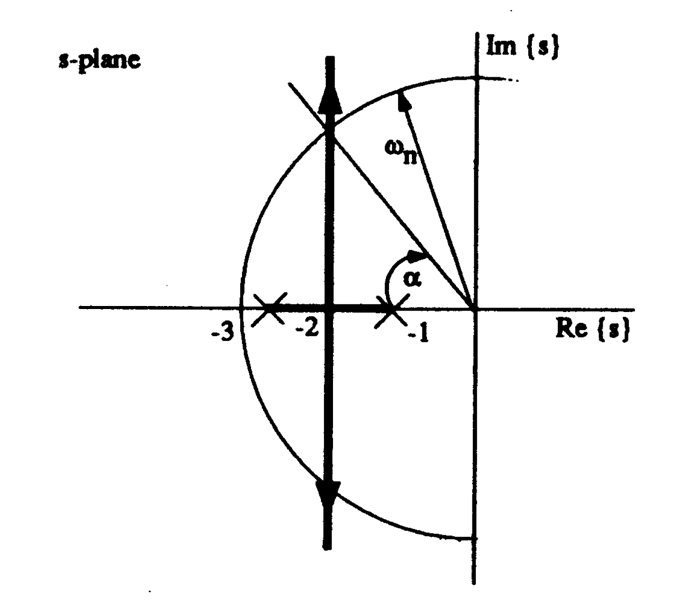
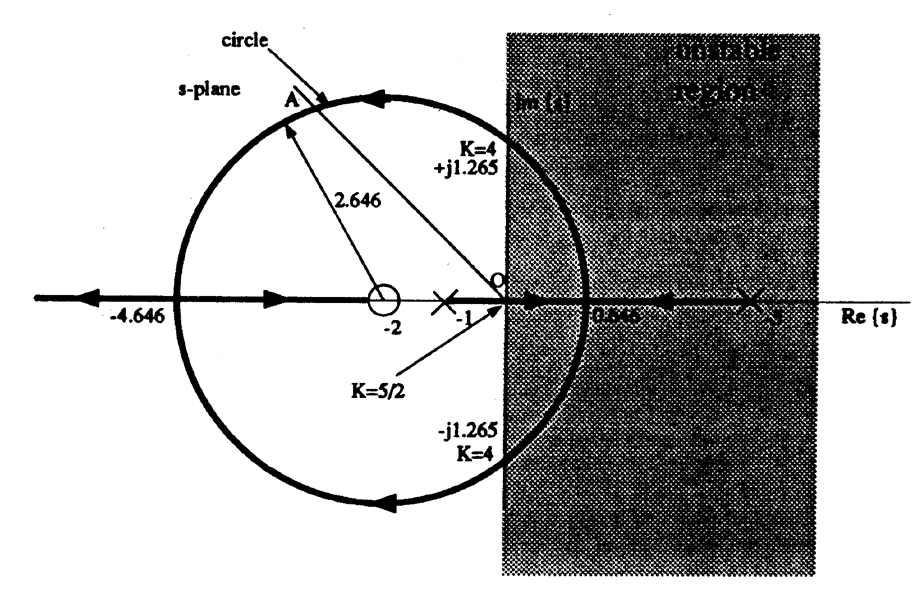
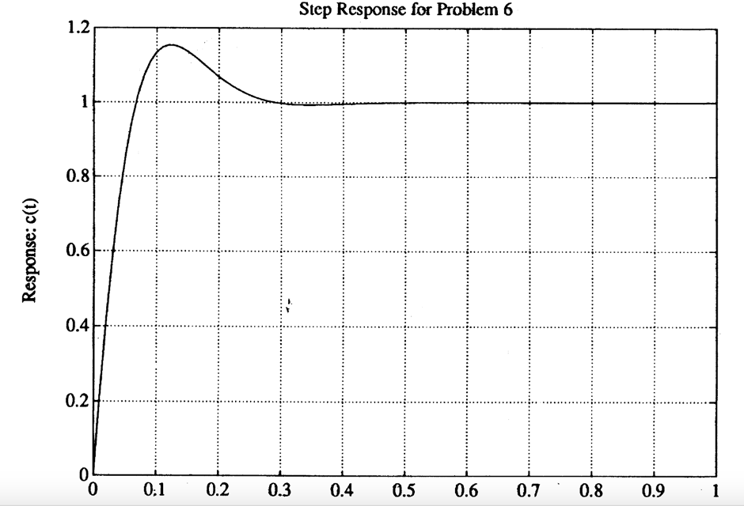

Solutions 1: Revision¶
Solutions¶
The closed-loop characteristic equation is given by the formula \(1 + GH (s) = 0\). Hence:
\(s + 2 = 0\); \(s^2 + 3s + 3 = 0\); \(s + 1 = 0\).
\(s(s + 1)(s^2 + s + 1) + K(s + 2)(s + 1) = 0\).
The stability problem may be solved by Routh-Hurwitz. Char. eqn. is:
\[1+G(s)=(s+1)(s-5)+K(s+2) = 0\]\[s^2 + (K-4)s + (2K-5) = 0\]Routh array is:
\[\begin{split}\begin{array}{*{20}{c}} {{s^2}}&1&{2K - 5}\\ {{s^1}}&{K - 4}&0\\ {{s^0}}&{\frac{{ - \left| {\begin{array}{*{20}{c}} 1&{2K - 5}\\ {K - 4}&0 \end{array}} \right|}}{{K - 4}} = 2K - 5}&0 \end{array}\end{split}\]First column of Routh array is \([1, K - 4, 2K - 5]\). There is one sign change (one untsable pole) if \(2K - 5 < 0\), ie. \(0 < K < 5/2\). There are two sign changes (two unstable poles) if \(K - 4 < 0\), i.e. \(K < 4\).
Hence system is untsable for \(0 < K < 4\), and stable for all \(K > 4\).
See Figure l. \(\alpha = \cos^{-1} \zeta\). \(\omega_n\) is given by the radius of the circle with origin \(0 + j0\) which passes through the point on the root-locus. For a given value of \(\zeta\) use trigonometry to determine the corresponding value of \(\omega_n\) and hence the closed-loop pole locations. For a given point \(s_0\) on the root-locus \(K\) is given by the formula:
\[K = \frac{1}{|G_o(s)|}=\frac{\displaystyle\prod_{i=1}^{n}{\left|s_o-p_i\right|}}{\displaystyle\prod_{i=1}^{m}{\left|s_o-z_i\right|}}.\]The terms \(|s_0-p_i|\) and \(|s_0-z_i|\) are the lengths of the lines drawn from the point \(s_0\) on the root-locus to the pole \(p_i\) and zero \(z_i\) respectively.
\(\zeta\) |
\(\omega_n\) |
\(K\) |
closed-loop poles |
|---|---|---|---|
\(0.0\) |
\(\infty\) |
\(\infty\) |
\(s = -2 \pm j\infty\) |
\(0.1\) |
\(20\) |
\(307\) |
\(s = -2 \pm j19.9\) |
\(0.5\) |
\(4\) |
\(13\) |
\(s = -2 \pm j3.46\) |
\(1.0\) |
\(2\) |
\(1\) |
\(s = -2,\;-2\) |
The constraint \(2 < \omega_n \le 10\) implies \(1 < \zeta \le 0.2\) and \(1 < K \le 97\). For a peak overshoot \(Mp \le 0.2\) we require \(\zeta \ge 0.48\) which implies that \(\omega_n \le 4.17\) rad.s-1 for this system (because \(\sigma = \zeta\omega_n = 2\)). The constraint on rise time can only be satisfied if \(\omega_n \le 0.56\) rad.s-1. Hence the two constraints cannot simultaneously be satisfied by adjusting the gain \(K\), since any valid roots would have to lie on the. root-locus.

The root-locus is shown in Figure 2. It verifies the stability result of Question 2. For ideal damping, the closed-loop poles must lie on line OA drawn at an angle of 135° to the positive real axis. The co-ordinates of (and hence the gain required to locate the dominant poles at) this point may be found by trigonometry. However it is easier to equate the coefficients of the model char. eqn. \(s^2 + \sqrt{2}\omega_n s + \omega_n^2 = 0\). If this is done you should find \(K = 9.16\) poles are: \(s=-2.58 \pm j 2.58\).

- \[E(s)=R(s)-C(s);\; C(s)= 1\;\frac{G(s)}{1+G(s)H(s)}R(s)\]
hence
\[E(s)= \frac{1+ G(H -1)}{l+GH}R(s)= \frac{s(1 + sT) + (h- 1)}{s(1+sT)+h} R(s)\]Final value, when \(R(s) = 1/s\) is: $\(\begin{eqnarray*} {\left. {e(t)} \right|_{t \to \infty }} = {\left. {sE(s)} \right|_{s \to 0}} \\ &=& s{\left\{ {\frac{{s(1 + sT) + (h - 1)}}{{s(1 + sT) + h}} \cdot \frac{1}{s}} \right\}_{s \to 0}} \\ &=& \frac{{h - 1}}{h} \end{eqnarray*}\)$
hence system is Type 0. When h = 1, system is Type 1.
Use the relationships given in the handout for \(T_r\), \(T_s\), and \(M_p\) to relate these paremeters to the s-plane. Additional constraints are: \(b_0 = a_0\) to give zero step-error, \(b_1 = 2\sigma - 0.0l\omega_n^2\) to satisfy the ramp error requirement. A solution is:
\(b_1 = 24.28\)
\(b_0 = 400\)
\(a_1 = 28.28\)
\(a_0 = 400\)
Note: ignoring the zero, the characteristic equation required is \(s^2 + 10s + 400\) which gives \(\omega_n = 20\), \(\zeta = 0.5\) (\(\sigma = \zeta\omega_n = 10\)). The zero has the effect of increasing the overshoot and so additional damping is required - you will need to iterate a few times to get a value of \(a_1\) that yields a satisfactory solution, see Figure 3. (This solution has \(\zeta = 0.707\)).
